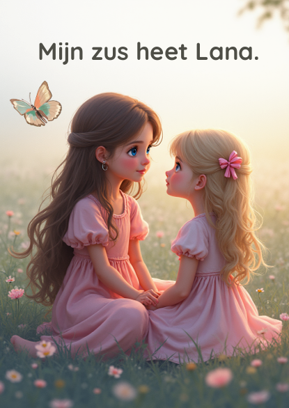
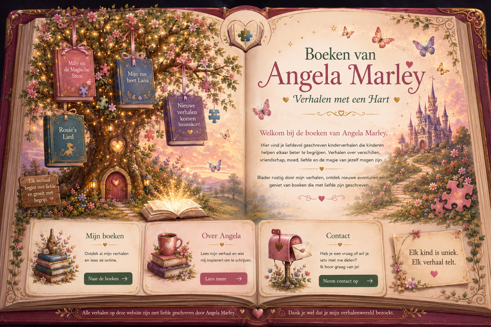
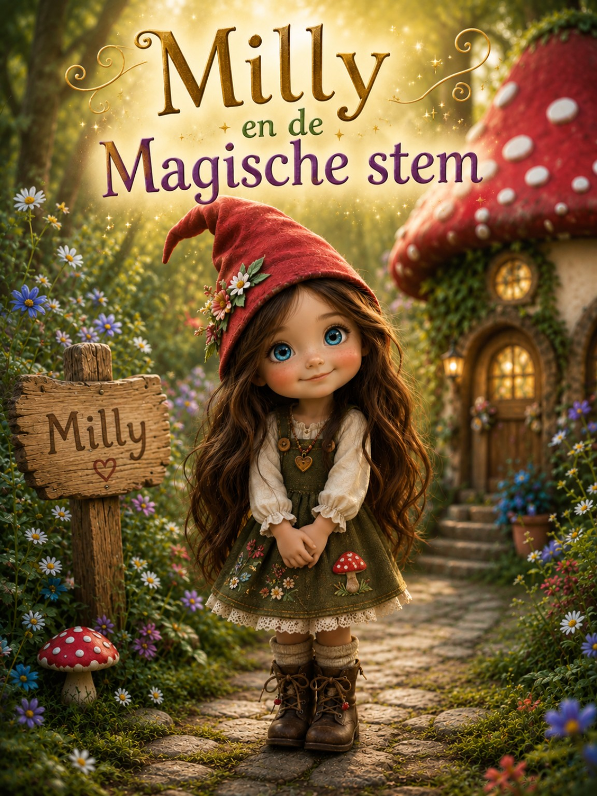
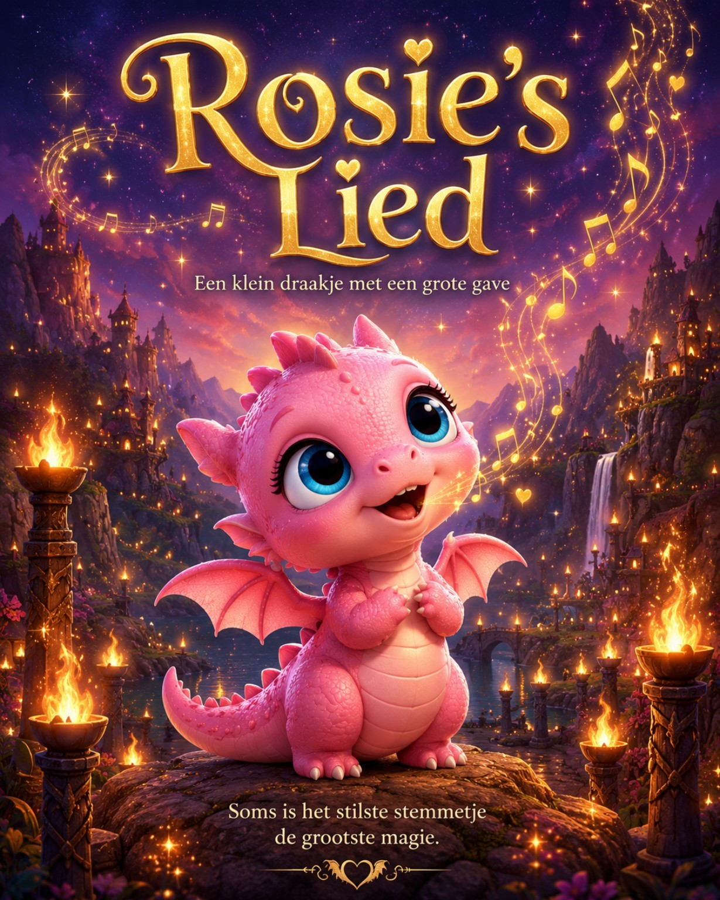

Boek 1
Mijn zus heet Lana
Een liefdevol verhaal over anders zijn, acceptatie en de bijzondere band tussen twee zusjes.

Verhalen met een Hart
Hier vind je liefdevol geschreven kinderverhalen die kinderen helpen elkaar beter te begrijpen. Verhalen over verschillen, vriendschap, moed, liefde en de magie van jezelf mogen zijn.
Blader rustig door mijn verhalen, ontdek nieuwe avonturen en geniet van boeken die met liefde zijn geschreven.
Stap mijn verhalenwereld binnen
Klik op een boek en sla het verhaal open.

Een liefdevol verhaal over anders zijn, acceptatie en de bijzondere band tussen twee zusjes.

Een magisch verhaal over communicatie, anders zijn en de kracht van op je eigen manier je stem laten horen.
Open het boek
Een dromerig drakenverhaal over stille kracht, bijzondere talenten en magie die anders klinkt.
Open het boekEen berichtje achterlaten
Heb je een reactie op een verhaal of wil je iets met mij delen? Binnenkort komt hier een eenvoudige gratis contactmogelijkheid.
Tot die tijd kun je deze website alvast delen met ouders, scholen, leerkrachten en iedereen die de verhalen graag wil lezen of voorlezen.